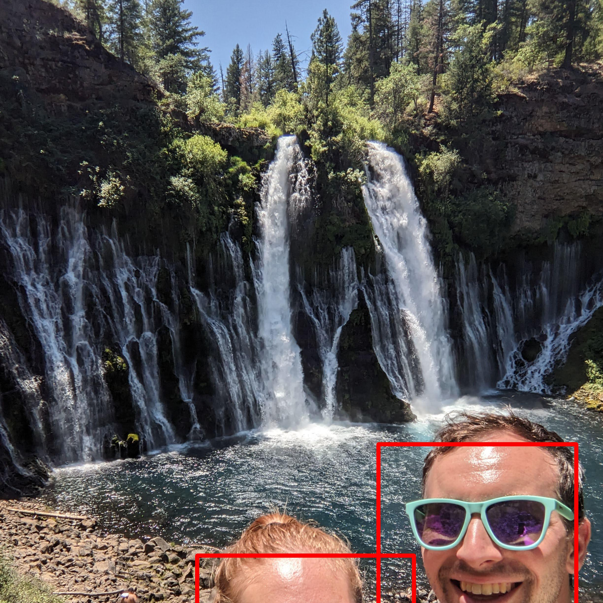

This is a personal project designed to combine many composition images to create a larger mosaic. My goal was to be able to create a mosaic for great memories themed around my family, relationship, friends, vacation, or any other occasion. The necessary inputs are simply a directory full of photos (minimum number of photos needed is on the order of hundreds) and a reference image for the mosaic. Creating the mosaic is done in 4 steps:
0) Crop the Composition Images.
1) Resize the Images.
2) Arrange the Composition Images.
3) Create Mosaic from Reference Image and Arranged Composition Images.
For simplicity, I decided to crop all of the composition images to squares. This way, the tiling arrangement is trivial because the composition images will be laid out in a grid. The naive initial implementation was to center crop by trimming away an even number or rows/columns from each side of the longer edge. This works well in most cases.
|
|
| Original Image | Center Cropped Image |
However, there are edge cases in which it does not work well. For example, sometimes center cropping cuts off faces. To account for this, I integrated an off the shelf face detector from OpenCV. When there are faces present, the algorithm will identify the total pixel area of the face detections, and then calculate what percentage of that face area would remain after applying center cropping, top/left cropping, and bottom/right cropping. It chooses to go with the crop that retains the greatest amount of face area (with a slight bias toward center cropping).
 |
 |
 |
 |  |
|
| Original Image | Face Detections | Candidate Crop: Center | Candidate Crop: Top Removed | Candidate Crop: Bottom Removed | Crop Selection: Top Removed |
| 83% of face area | 100% of face area | 48% of face area |
Using face detection helped fix many of the problematically cropped images. However, there were still a few that didn't have any faces that weren't cropped optimally. For a generic detection of what is important, I used an off the shelf OpenCV saliency heatmap. The cropping approach using saliency is similar to the face detection crop approach. Unfortunately, the saliency output was not good enough to use instead of the FD because it seems to simply heavily bias towards contrast/edges (larger faces were not considered salient compared to noisy background). Therefore, the saliency approach was only used when no faces were detected. For the saliency approach, a heatmap was generated for the image. The ratio of remaining heat for each candidate crop are compared to determine the best final crop. A large bias toward the center crop needed to be implemented because the saliency output is not reliable enough to trust it directly.
| Original Image | Candidate Crop: Center | Candidate Crop: Top Removed | Candidate Crop: Bottom Removed | Crop Selection: Top Removed |
| 48% of saliency | 89% of saliency | 33% of saliency | ||
 |
 |
 |
In order for the mosaic reference image to fit well with the cropped composition images, both need to be resized. First, the mosaic reference image has its edges trimmed so that the number of pixels is divisible by the number of composition images that make up each dimension. Then, the mosaic image is scaled up so that composition images don't need to shrink by too much and can retain some detail. Finally, the cropped composition images are scaled down so that they fit evenly as subsections of the mosaic reference image. At the end of this step, all images (mosaic reference image and composition images) should be the desired resolution.
TODO: Fill in details.
At this stage, we have an arrangment of composition images and a reference mosaic image of the same size. The simplest way to combine these two is to take a weighted average (pixel-wise) of the two images. This was the initial approach, and yielded decent combination results. Here is an example of the first combination effort:

While these results are pretty good, the combination of the reference and arrangement into a mosaic could be improved. First, I improved the color of the composition images by tinting each one based on the median color in the same region of the mosaic reference image. Notice how in the example below the arranged composition images have the general trend of matching the reference image (blue and white images seem to be where there are similar shirt colors in the reference image). The tinting makes the composition arrangement look much more like the reference image.
 |
 |
|
| Reference Image | Arranged Composition Images | Tinted Composition Image Arrangement |
In addition to tinting to make the colors match better, it makes sense to improve the combination of these images by blending based on frequency. Without any frequency based blending, the high frequencies (sharp edges) from the reference image can distract from the details in the composition images when trying to view individual composition images up close. For more details on frequency blending, see this project in my computational photography class. To perform frequency based blending, I smoothed the reference image by convolving with a 2d gaussian (approximating a low pass filter). I also sharpened the tinted composition arrangement by adding the high frequency content (high_freq = original-blurred) back into the original image. This helps make each composition image easier to distinguish from the reference image. See the below examples of final mosaic cutouts with and without frequency blending is applied.
| Without Frequency Blending | Frequency Blended (smoothed reference & sharpened tinted arrangement) |
The above cutouts demonstrate how frequency blending brings allows the individual composition images to show through much better when looking closely at the mosaic. The fact that the mosaic as a whole loses fine detail usually isn't a problem. The edge case is that faces, especially eyes, in the mosaic are then blurry. While it is fine (maybe even desireable) to have the background blurry (such as the bridge in the above examples), this is not good for the faces/eyes of the subject. See original mosaic composition below for an example. Notice how the faces/eyes are blurry, which detracts from the image quality.
To get around this, I used a mask to blend the original reference image with the smoothed version. The mask was created by applying a 2d gaussian anywhere there is a face detection. It is important to also take the max of the new gaussian and the original mask to prevent overlapping face detections resulting in poor mask restuls. See the below for an example.
| Face Detections | Bad Mask | Good Mask |
Once the mask is created, it is used to blend the original reference image with the smoothed version to have an improved smoothed image that keeps faces sharp.
| Original Reference Image with Face Detections | Mask | Smoothed Reference Image | Updated Smoothed Reference Image (with sharp faces) |
The resulting updated smoothed image looks a little bit creepy. But since this smoothed image is blended with the sharpened composition arrangement anyway, it isn't noticeable in the final mosaic. After comparing the final mosaic using the orignal smoothed reference image vs. using the updated smoothed reference image, it is clear that the updated version yields better results. The faces in the mosaic retain sharpness while still gaining the benefits of being able to view the composition images up close without high frequency content from the reference interfering (in most of the image).
| Original Mosaic (using full smoothing) | Updated Mosaic (retaining face sharpness in smoothed reference) |